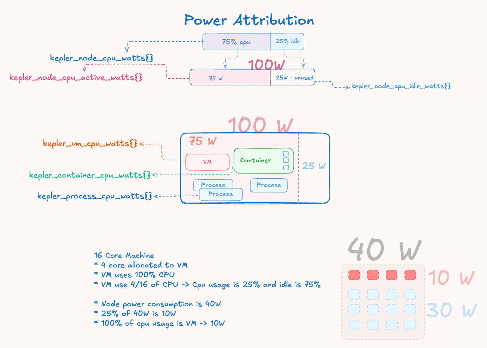

Understanding Kepler Power Attribution
This guide explains how Kepler measures and attributes power consumption to processes, containers, VMs, and pods running on your system.
How Power Attribution Works
The Big Picture
Modern systems lack per-workload energy metering, providing only aggregate power consumption at the hardware level. Kepler addresses this attribution challenge through proportional distribution based on resource utilization:
- Hardware Energy Collection - Intel RAPL sensors provide cumulative energy counters at package, core, DRAM, and uncore levels
- System Activity Analysis - CPU utilization metrics from
/proc/statdetermine the ratio of active vs idle system operation - Power Domain Separation - Total energy is split into active power (proportional to workload activity) and idle power (baseline consumption)
- Proportional Attribution - Active power is distributed to workloads based on their CPU time consumption ratios
Core Philosophy
Kepler implements a CPU-time-proportional energy attribution model that distributes hardware-measured energy consumption to individual workloads based on their computational resource usage patterns.
The fundamental principle recognizes that system power consumption has two distinct components:
- Active Power: Energy consumed by computational work, proportional to CPU utilization and scalable with workload activity
- Idle Power: Fixed baseline energy for maintaining system operation, including memory refresh, clock distribution, and idle core power states
Attribution Formula
All workload types use the same proportional attribution formula:
Workload Power = (Workload CPU Time Δ / Node CPU Time Δ) × Active Power
This ensures energy conservation - the sum of attributed power remains proportional to measured hardware consumption while maintaining fairness based on actual resource utilization.

Figure 1: Power attribution flow showing how total measured power is decomposed into active and idle components, with active power distributed proportionally based on workload CPU time deltas.
Understanding Energy vs Power
- Energy: Measured in microjoules (μJ) as cumulative counters from hardware
- Power: Calculated as rate in microwatts (μW) using
Power = ΔEnergy / Δtime
Energy Zones
Hardware energy is read from different zones:
- Package: CPU package-level energy consumption
- Core: Individual CPU core energy
- DRAM: Memory subsystem energy
- Uncore: Integrated graphics and other uncore components
- PSys: Platform-level energy (most comprehensive when available)
Attribution Examples
Example 1: Basic Power Split
System State:
- Hardware reports: 40W total system power
- Node CPU usage: 25% utilization ratio
- Power split: 40W × 25% = 10W active, 30W idle
Workload Attribution: If a container used 20% of total node CPU time during the measurement interval:
- Container power = (20% CPU usage) × 10W active = 2W
Example 2: Multi-Workload Scenario
System State:
- Total power: 60W
- CPU usage ratio: 33.3% (1/3)
- Active power: 20W, Idle power: 40W
- Node total CPU time: 1000ms
Process-Level CPU Usage:
- Process 1 (standalone): 100ms CPU time
- Process 2 (in container-A): 80ms CPU time
- Process 3 (in container-A): 70ms CPU time
- Process 4 (in container-B): 60ms CPU time
- Process 5 (QEMU hypervisor): 200ms CPU time
- Process 6 (in container-C, pod-X): 90ms CPU time
- Process 7 (in container-D, pod-X): 110ms CPU time
Hierarchical CPU Time Aggregation:
- Container-A CPU time: 80ms + 70ms = 150ms
- Container-B CPU time: 60ms
- Container-C CPU time: 90ms (part of pod-X)
- Container-D CPU time: 110ms (part of pod-X)
- Pod-X CPU time: 90ms + 110ms = 200ms
- VM CPU time: 200ms (QEMU hypervisor process)
Independent Power Attribution (each from node active power):
- Process 1: (100ms / 1000ms) × 20W = 2W
- Container-A: (150ms / 1000ms) × 20W = 3W
- Container-B: (60ms / 1000ms) × 20W = 1.2W
- Pod-X: (200ms / 1000ms) × 20W = 4W
- VM: (200ms / 1000ms) × 20W = 4W
Note: Each workload type calculates power independently from node active power based on its own CPU time, not by inheriting from constituent workloads.
Example 3: Container with Multiple Processes
Container "web-server":
- Process 1 (nginx): 100ms CPU time
- Process 2 (worker): 50ms CPU time
- Container total: 150ms CPU time
If node total CPU time is 1000ms:
- Container CPU ratio: 150ms / 1000ms = 15%
- Container power: 15% × active power
Example 4: Pod with Multiple Containers
Pod "frontend":
- Container 1 (nginx): 200ms CPU time
- Container 2 (sidecar): 50ms CPU time
- Pod total: 250ms CPU time
If node total CPU time is 1000ms:
- Pod CPU ratio: 250ms / 1000ms = 25%
- Pod power: 25% × active power
Limitations and Considerations
When CPU Attribution Works Well
- CPU-bound workloads with similar instruction mixes
- Steady-state workloads without significant frequency scaling
- Relative comparisons between similar workload types
- Trend analysis over longer time periods
When to Exercise Caution
- Mixed workload environments with varying compute vs I/O patterns
- High-performance computing workloads using specialized instructions
- Absolute power budgeting decisions based solely on Kepler metrics
- Fine-grained optimization requiring precise per-process power measurement
Workload-Specific Characteristics
Compute vs Memory-Bound Workloads
Example Scenario:
- Process A: 50% CPU, compute-intensive (high frequency, active execution)
- Process B: 50% CPU, memory-bound (frequent stalls, lower frequency)
Current Attribution: Both receive equal power
Reality: Process A likely consumes 2-3x more power
CPU Power States Impact
Modern CPUs implement sophisticated power management that affects attribution accuracy:
- C-States (CPU Sleep States): Different sleep behaviors affect power consumption
- P-States (Performance States): Dynamic frequency scaling affects power per CPU cycle
- Instruction-Level Variations: Vector instructions consume more power than scalar operations
Beyond CPU Attribution
Memory and I/O Considerations
- DRAM Power: Memory-intensive workloads consume more DRAM power
- Storage I/O: Triggers storage controller and device power
- Network I/O: Consumes network interface and PCIe power
- GPU Workloads: Integrated graphics power not captured by CPU metrics
Key Metrics
kepler_node_cpu_watts{}: Total node power consumptionkepler_process_cpu_watts{}: Individual process powerkepler_container_cpu_watts{}: Container-level powerkepler_vm_cpu_watts{}: Virtual machine powerkepler_pod_cpu_watts{}: Kubernetes pod power
Conclusion
Kepler's power attribution system provides practical, proportional distribution of hardware energy consumption to individual workloads. While CPU-time-based attribution has inherent limitations due to modern CPU complexity, it offers a good balance between accuracy, simplicity, and performance overhead for most monitoring and optimization use cases.
Understanding both the capabilities and limitations helps users make informed decisions about when and how to rely on Kepler's power attribution metrics.